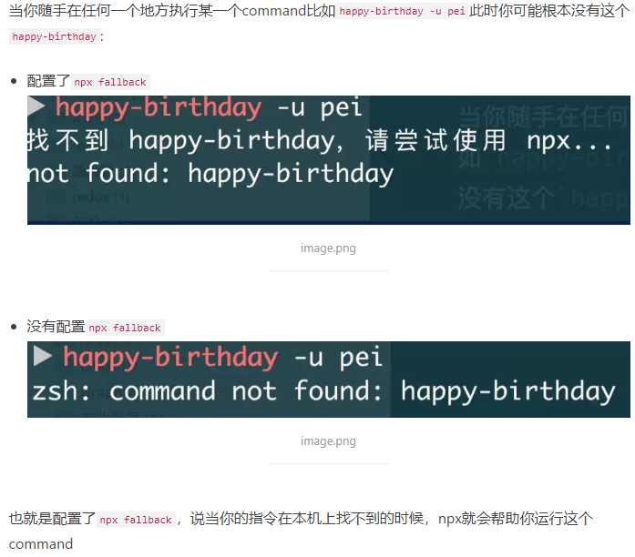
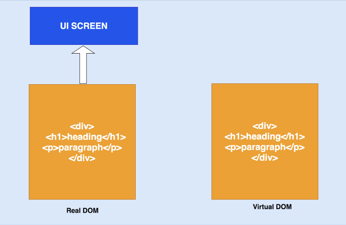
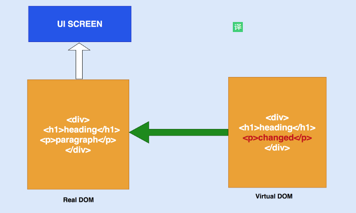
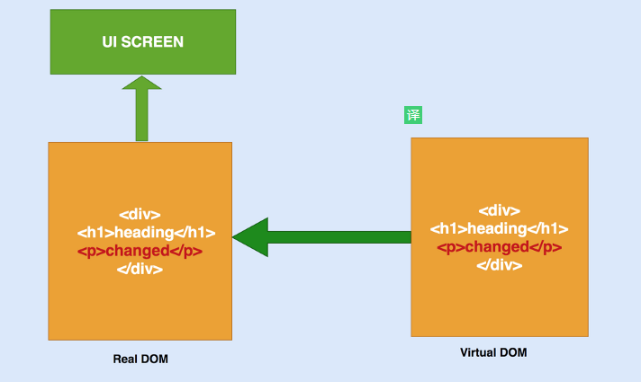
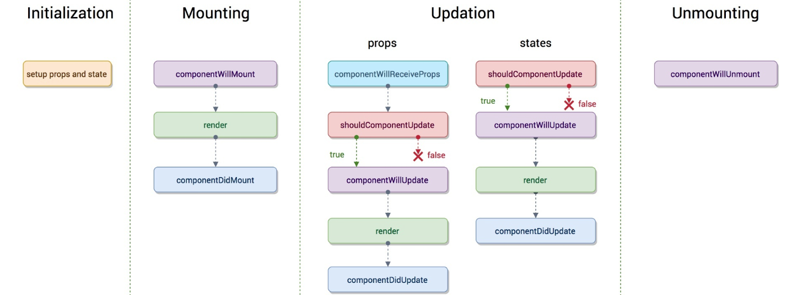
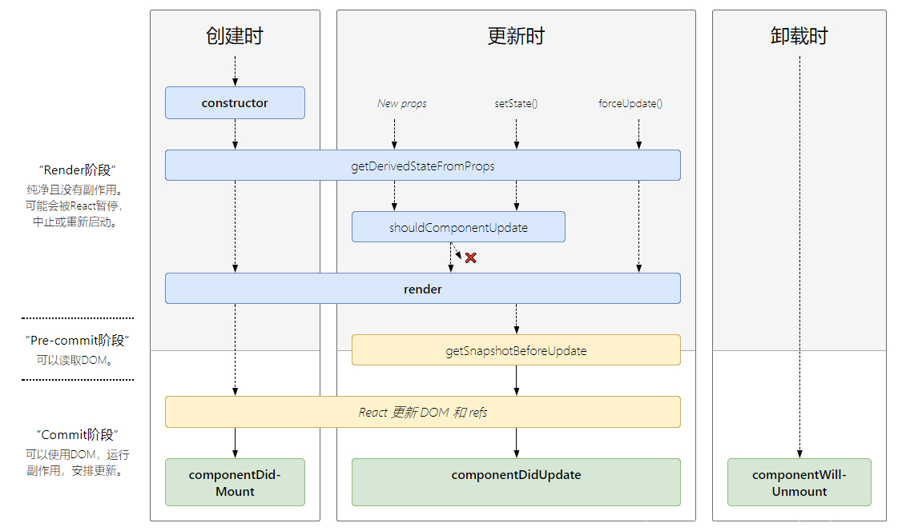
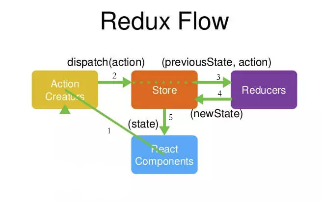
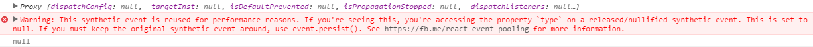
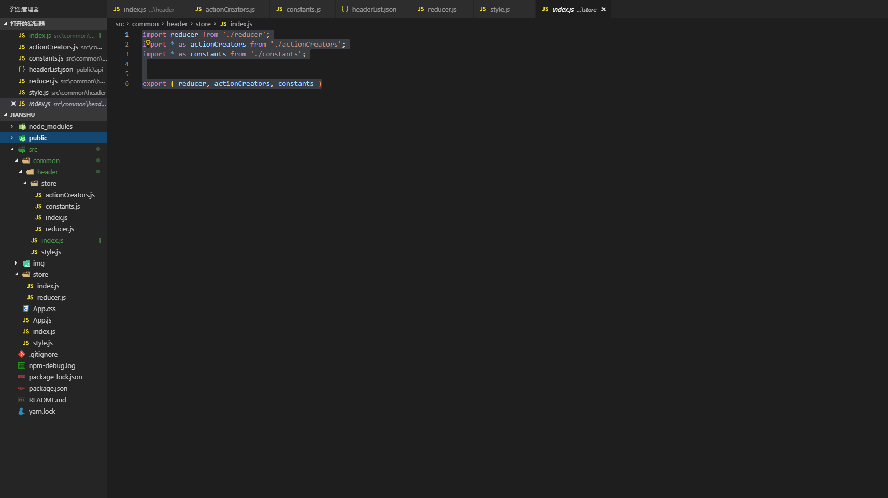

新版 React 知识学习总结
React
一、前提基础
1、JavaScript基础（ECMAScript）
ES6文档：http://es6.ruanyifeng.com/
注意：这里我节选一些常用新特性的简述，详情或不足之处请见文档
1、let、const
let 定义的变量不会被变量提升，const 定义的常量不能被修改，let 和 const 都是块级作用域
2、import、export
import导入模块、export导出模块
1 | //导入所有 |
3、class、extends、super
1 | // 下面代码首先用class定义了一个“类”，可以看到里面有一个constructor方法，这就是构造方法，而this关键字则代表实例对象。 |
4、箭头函数
1 | //普通函数 |
5、模板字符串
1 | //字符串拼接 |
6、解构赋值
1 | //解构能让我们从对象或者数组里取出数据存储为变量 |
7、default函数默认参数
1 | // ES5 给函数定义参数默认值 |
8、rest arguments （rest参数）
1 | //解决了 es5 复杂的 arguments 问题 |
9、展开运算符
1 | //合并数组 |
10、对象简写
1 | //对象初始化简写 |
11、Generators
1 | //生成器（Generator）是能返回一个迭代器的函数 |
12、Promise
1 | //用同步的方法去写异步代码 |
13、async await
1 | // generator函数 |
14、Set 和 Map数据结构
Set
1 | // ES6提供了新的数据结构Set和Map。 |
Set 结构的实例有以下属性。
Set.prototype.constructor：构造函数，默认就是Set函数。Set.prototype.size：返回Set实例的成员总数。
Set 实例的方法分为两大类：操作方法（用于操作数据）和遍历方法（用于遍历成员）。下面先介绍四个操作方法。
Set.prototype.add(value)：添加某个值，返回 Set 结构本身。Set.prototype.delete(value)：删除某个值，返回一个布尔值，表示删除是否成功。Set.prototype.has(value)：返回一个布尔值，表示该值是否为Set的成员。Set.prototype.clear()：清除所有成员，没有返回值。
Set 结构的实例有四个遍历方法，可以用于遍历成员。
Set.prototype.keys()：返回键名的遍历器Set.prototype.values()：返回键值的遍历器Set.prototype.entries()：返回键值对的遍历器Set.prototype.forEach()：使用回调函数遍历每个成员
1 | // 如果想在遍历操作中，同步改变原来的 Set 结构，目前没有直接的方法，但有两种变通方法。 |
Map
1 | // JavaScript 的对象（Object），本质上是键值对的集合（Hash 结构），但是传统上只能用字符串当作键。这给它的使用带来了很大的限制。 |
Map 结构的实例有以下属性和操作方法：
- size 属性
- Map.prototype.set(key, value)
- Map.prototype.get(key)
- Map.prototype.has(key)
- Map.prototype.delete(key)
- Map.prototype.clear()
遍历方法：
Map 结构原生提供三个遍历器生成函数和一个遍历方法。
Map.prototype.keys()：返回键名的遍历器。Map.prototype.values()：返回键值的遍历器。Map.prototype.entries()：返回所有成员的遍历器。Map.prototype.forEach()：遍历 Map 的所有成员。
需要特别注意的是，Map 的遍历顺序就是插入顺序。
15、JS新增遍历方法
for in
1 | // 遍历的key,key为string类型，也会循环原型链中的属性，适用于对象 |
for of
1 | // 遍历的value |
forEach
1 | // 最节省内存的一种，但是不能break，也不能用return |
map
1 | // 同forEach写法一样，循环每一个的时候就相当于在内存中新建了一个数据，比较占内存，与forEach不同的是，它可以return。返回数组。 |
object.keys()/values()
1 | console.log(Object.keys(obj)) // (3) ["name", "age", "hobby"] |
Array
1、Array.prototype.some()
1 | // 得到一个布尔值，只要有一个符合条件就可返回true |
2、Array.prototype.filter()
1 | // 返回一个符合条件的新数组 |
3、Array.prototype.find() – 查找目标元素
1 | // 返回符合条件的数组的值或数组的对象，找不到返回undefined |
4、Array.prototype.findIndex() – 查找目标元素**
1 | //findIndex()函数查找目标元素，找到就返回元素的位置，找不到就返回-1。 |
5、Array.prototype.every()
1 | // 遍历所有元素，得到一个bool值，要所有条件都相符才会返回true |
6、Array reduce()方法
1 | // reduce() 方法接收一个函数作为累加器，数组中的每个值（从左到右）开始缩减，最终计算为一个值。 |
7、Array reduceRight()方法
1 | // reduceRight()方法,和 reduce() 功能是一样的，它是从数组的末尾处向前开始计算。 |
2、Node基础
node.js是一个JavaScript运行环境
node官网：http://nodejs.cn/
3、npm && npx && nvm
npm (node package manager)：
node包管理器，主要管理node包安装，卸载、更新、查看、搜索和发布。将开发者从繁琐的包管
理工作（版本、依赖）中解放出来。nodejs已经集成了npm，所以安装nodejs的时候npm也一并安装好
了。
通常情况下，我们也可以安装yarn或者使用cnpm淘宝镜像来下载node包
npx：
是什么？
npx是一个工具，npm v5.2.0引入的一条命令（npx），一个npm包执行器
有什么用及使用？
1、最重要的一点就是再也不需要全局安装任何工具只需要npx <commang>
当在执行npx
的时候，npx会做如下操作： 帮你在本地（可以是项目中的也可以是本机的）寻找这个 command
找到了： 就用本地的版本
没找到： 直接下载最新版本，完成命令要求
使用完之后不会在你的本机或者项目留下任何东西
2、不会污染版本机
3、永远使用最新版本的dependency
4、帮助切换版本
假设你本机安装的node版本是node@8，但是你的项目可能需要使用使用node@6做测试，如果你有nvm，可以使用
nvm use v8.11，其实npx也可以帮你做成。 使用
npx -p node@6 npm run test npx会帮助你下载node@6
将此时的环境变成node@6版本
使用node@6帮你执行npm run test
命令执行完毕之后不会修改你原来的node版本
指令可以理解为使用node@6版本运行
npm run test
5、任何command都通过npx在machine任何位置使用
举个例子，在某一个项目中使用
npm install --save-dev @babel/core @babel/cli安装babel。此时：
你在命令行中使用babel script.js一定会报错说babel不存在，即便你的node_module中babel静静的躺在那里，你只有两种方式可以使用babel：你可以通过在
package.json的script中使用babel去compile某一个directory（用npm run-script的形式）你也可以通过使用
./node_modules/.bin/babel script.js用babel去compile某一个script文件（使用babel包中的可执行文件）那么他的局限性就很大：
虽然你的node_module中有babel，等价于你的machine上有babel，但是你不能方便的在任何位置使用
babel，只能通过以上的两种方式。但是有了npx在任何位置使用babel command似乎就不是难题了：
当你任何位置（根目录下/项目根目录下）运行
npx babel script.js不会再报错说babel不存在了：npx会帮你找到本机下的babel然后运行
6、帮助执行one-off指令
对于一些工具，比如
create-react-app，它们有些特性： 可能很久才会被使用一次
安装包会很大
我们似乎真的没必要将他们都安装到电脑上，所以可以直接使用
npx tool-command
7、通过SHELL AUTO FALLBACK 将npx作为所有指令找不到时的fallback地址
在你的命令行配置文件中（~/.bashrc, ~/.zshrc, ~/.config/fish/config.fish）配置以下指令：
For bash@>=4:
$ source <(npx --shell-auto-fallback bash)For zsh@>=4:
$ source <(npx --shell-auto-fallback zsh)For fish@>=4:
$ source (npx --shell-auto-fallback fish | psub)

nvm (node version manager)：
nvm —- node多版本管理器
在开发中，我们可能同时在进行多个 node 项目，而这些不同的项目所使用的 node 版本又是不一样的，或者是要用更新的 node 版本进行试验和学习。
这种情况下，对于维护多个版本的 node 将会是一件非常麻烦的事情，而 nvm 就是为解决这个问题而产生的，他可以方便的在同一台设备上进行多个 node 版本之间切换。
4、webpack（资源模块化管理和打包工具）
官网文档：https://www.webpackjs.com/concepts/
二、项目搭建
1、使用脚手架
1、使用脚手架创建项目：
1 | npx create-react-app my-app //my-app 为自己的项目文件名（自定义） |
2、删除src目录下所有代码，新建index.js文件，入口文件
1 | import React from 'react' |
3、新建App.js文件或App.jsx文件
1 | //React中，可以使用JSX来描述UI，用来解耦和DOM操作，react只做逻辑层，reactDOM去渲染实际的dom；移动端例外，如果为移动端，可以使用其他的渲染库 |
2、使用webpack
####初始化项目
1 | mkdir diy-webpack-for-react |
添加.gitignore文件(git上传过滤文件)
1 | node_modules |
初始化git仓库
1 | git init |
安装webpack
1 | npm i webpack webpack-cli -D |
配置webpack.config.js
配置思路：
- 配置入口（entry）
- 配置输出（output）
- 配置各种资源加载的loader
- 使用HtmlWebpackPlugin将打包后的js入口文件的脚本注入到html模板中
1 | //安装依赖 |
1 | //webpack.config.js代码配置如下： |
配置.babelrc
1 | //我们需要配置.babelrc文件，来告诉babel我们要使用的presets。 |
配置npm脚本
1 | //在npm内添加以下脚本，方便开发使用 |
使用 npm run build，打包项目。使用npm run serve:dist,将打包后的文件跑起来。
一个简单的webpack配置完毕！
1 | //安装react和react-dom包依赖 |
现在可以开始写react了！
扩展：
如果有需要可以在前面的基础上对
webpack.config.js进行拆分。以适应其他需求项目开发时，我们需要用
webpack-dev-server启动开发服务器，当我们修改文件时，它能自动重新打包项目并刷新页面。项目打包上线时，我们希望webpack能进行更多的处理来优化打包后的代码。
针对不同的需求，我们需要将配置文件拆分为
webpack.common.js webpack.dev.js webpack.prod.js。
1、配置webpack.common.js
1 | //此文件是共用的配置。 |
2、配置webpack.dev.js
我们需要使用webpack-merge将前面配好的webpack.comm.js合并进来。而且需要webpack-dev-server来启动开发服务器。
安装：
webpack-mergewebpack-dev-server1
2
3
4
5
6
7
8
9
10
11
12
13
14
15
16
17
18
19
20
21
22
23
24
25
26
27
28
29
30
31
32
33
34
35
36
37
38
39
40
41const path = require("path");
const HtmlWebpackPlugin = require("html-webpack-plugin");
const merge = require("webpack-merge");
const common = require("./webpack.common");
// 使用webpack-merge将webpack.common.js合并进来
module.exports = merge(common, {
// 设置为开发（development）模式
mode: "development",
// 设置source map,方便debugger
devtool: "inline-source-map",
output: {
filename: "main.js",
path: path.resolve(__dirname, "dist"),
publicPath: "/"
},
devServer: {
// 单页应用的前端路由使用history模式时，这个配置很重要
// webpack-dev-server服务器接受的请求路径没有匹配的资源时
// 他会返回index.html而不是404页面
historyApiFallback: true
},
module: {
rules: [
{
test: /\.css$/,
use: ["style-loader", "css-loader"]
},
{
test: /\.(png|jpg|jpeg|svg|gif)$/,
use: "file-loader"
}
]
},
plugins: [
new HtmlWebpackPlugin({
template: "./src/template.html",
favicon: "./src/assets/favicon-32x32-next.png"
})
]
});
3、配置webpack.prod.js
打包生产环境使用的代码需要非常多的优化和处理，所以这个文件的配置会非常复杂。
3.1、配置思路
将css样式从main.js内抽离到单独的.css文件
缓存处理
将第三方库和webpack的runtime从main.js内抽离出来
js、css、html代码压缩
使用source-map替代inline-source-map
懒加载（lazy loading）
每次打包前先清空dist目录
3.2、抽离css样式
前面的webpack.dev.js只是简单的使用了css-loader和style-loader。
css-loader将项目导入的css样式转为js模块，打包到main.js内。
style-loader在main.js内提供了一个能将css动态插入到html内的方法。
当用户打开页面时，会先加载html,然后加载main.js,最后运行js脚本将样式插入到style标签内。
这样有多个缺点：
css被打包到了main.js内，增加了它的文件大小，而且也不方便对css做缓存
css样式得等到main.js脚本运行，并插入到html时才会有效果。这个空档期虽然很短，但它会造成界面闪烁。
优点：
打包速度快
所以style-loader与css-loader的组合仅适用于开发。我们需要使用mini-css-extract插件，并用该插件提供的
loader来替代style-loader。
1 | // ... |
1 | // ... |
3.3、缓存处理
缓存是前端页面性能优化的重点。我们希望浏览器能长久缓存资源，同时又能在第一时间获取更新后的资源。
具体思路是：后端不对index.html做任何缓存处理，对css、js、图片等资源做持久缓存。将output.filename配置为”main.[contentHash].js”,这样打包后的main.js中间会加上一段contentHash。contentHash是根据打包文件内容产生的，内容改变它才会发生改变。发布时，由于哈希值不同，服务器能同时保存着不同哈希版本的资源。这样保证了发布过程中，用户仍然能够访问到旧资源,并且新用户会访问到新资源。
加上contentHash后打包文件名变成main.xxxxxx.js，其中xxxxxx代表一串很长的哈希值。
但是，现在我们的业务代码、引用的第三方库，还有webpack生成的runtime都被捆绑打包到了main.xxxxxx.js内。第三方库和webpack的runtime变动的频率非常低，所以我们不希望每次业务代码的改动导致用户得连同它们一起重新下载一遍。因此我们需要将它们从main.xxxxxx.js内抽离出来。
还有一点需要注意，webpack以前的版本有个小小的问题。在打包文件内容没发生变化的情况下contentHash任然会发生改变。此时需要使用webpack.HashedModuleIdsPlugin插件来替代默认的哈希生成。虽然webpack4修复了这个问题，但是官方文档还是推荐我们使用webpack.HashedModuleIdsPlugin插件。
3.4、抽离第三方库与webpack runtime
前面已经说明了为什么要抽离他们。
以前的版本使用commons-chunk-plugin插件来抽离第三方库，webpack 4通过配置optimization.splitChunks来抽取。内部其实使用了split-chunks-plugin插件。
将optimization.runtimeChunk选项配置为single,可以将webpack runtime抽离到单文件中。
1 | // ... |
3.5、js、css、html代码压缩
打包后的js、css、html会有注释、空格、换行，开启代码压缩可以大幅度减少资源的体积。
在mode设为”production”时，会默认使用terser-webpack-plugin插件对js进行压缩。我们还要开启html与css的压缩，所以要重写optimization.minimizer选项。
1 | // ... |
3.6、使用source-map替代inline-source-map
发生bug时，我们很难通过打包后的代码找出错误的源头。所以我们需要source map将代码映射为原来我们手写时候的样子。
前面的webpack.dev.js内使用的是inline-source-map。它的缺点是将map内敛到了代码内，这样用户会连同资源将map一起下载。
所以我们使用source-map,它会给打包后的每个js单独生成.map文件。
3.7、懒加载（lazy loading）
懒加载也叫按需加载。我们当前打包的所有js会在页面加载过程中被加载运行。但是大多数情况下，用户并不会访问应用的所有页面与功能。我们可以将每个页面的代码或一些不常使用的功能模块做成按需加载，这样可以大大减小用户初次访问时所要加载的资源大小。
懒加载是webpack4默认支持的，不需要任何配置。前端人员需要在开发时使用dynamic import按需引入模块。webpack会自动将dynamic import引入的模块单独打包为一个chunk（注意：dynamic import语法上需要babel插件的支持，会在下一章节提到该插件）。
webpack官网提供的例子：
1 | // print.js |
1 | // src/index.js |
通过点击按钮，触发加载print模块。/* webpackChunkName: “print” */这个注释告诉webpack该模块打包成的chunk名字叫print。
3.8、清空dist目录
使用clean-webpack-plugin在打包前清空dist目录。
3.9、webpack.prod.js的完整配置
安装：
mini-css-extract-plugin
clean-webpack-plugin
terser-webpack-plugin optimize-css-assets-webpack-plugin
url-loader
1 | const path = require("path"); |
4、配置npm脚本
1 | // ... |
5、结尾
基本配置完成,可以安装react-router redux进行单页应用开发了
1 | npm i react-router-dom redux react-redux redux-thunk |
三、知识点梳理
官网网址：https://zh-hans.reactjs.org/docs/introducing-jsx.html
1、JSX
什么是JSX？
JSX是对js语法扩展，使我们可以用类似xml方式描述视图
**为什么需要JSX? **
执行快、类型安全、简单快速
原理？
babel-loader会预编译JSX为React.createElement(type,props,…chilrden)
怎么用？
1、介绍示例
1 | <MyDemo color="color"></MyDemo> |
2、在React中必须声明引入React
原因： 由于，使用了jsx语法，因此，jsx会进行编译解析，解析之后的文件就需要引入React
示例：
1 | import React from 'react'; |
1 | import React from "react" |
3、点表示语法
可以在一个模块中导出多个React组件
示例：
1 | import React from 'react' |
4、首字母大写
由于JSX内置机制，
小写字母开头的元素(
…)会被传递给React.createElement;
大写字母开头的元素(
示例：
1 | import React from 'react'; |
1 | import React from 'react'; |
1 | import React from 'react' |
5、运行时选择类型
不能使用JSX表达式来作为React元素的标签
（如果你想通过表达式来确定react元素的类型，请先将其赋值给大写开头的变量。这种情况下，一般会在你想通过属性值条件渲染组件时出现）
示例：
1 | //错误示例 |
6、属性
在JSX中有几种不同的方式来指定属性
6.1使用JavaScript表达式
使用{}包裹JavaScript表达式作为一个属性值。
注意：if语句和for循环在JavaScript中不是表达式，因此他们不能直接在JSX中使用，只能在周围使用（即return之外）
示例：
1 | <MyComponent sum={ 1 + 2 + 3 + 4 } /> |
6.2字符串常量
可以将字符串常量作为属性值传递
如果遇到转义字符串，则该值会被解析为HTML转义字符串
示例：
1 | <MyComponent message="hello" title="<3" /> |
7、默认值为true
如果没有给属性传值，它的默认值为true
注意：不推荐使用。因为会与ES6简洁语法混淆，这里能使用，是因为它符合HTML的做法
示例：
1 | <MyTextBox foo /> |
8、扩展属性
如果你已经有了一个props对象，并且想在JSX中传递，可以使用 … 作为扩展操作符来传递整个属性对象。
示例：
1 | function App1() { |
9、子代
在包含开始和结束标签的JSX表达式中，标记之间的内容作为特殊的参数传递:
props.children。有几种不同的方法来传递子代
9.1字符串常量传递
示例：
1 | <MyComponent>hello world!</MyComponent> |
9.2JSX组件传递
示例：
1 | <MyContainer> |
9.3、JavaScript表达式
可以将任何{}包裹的JavaScript表达式作为子代传递。
示例：
1 | <MyComponent>foo</MyComponent> |
9.4函数
示例：
1 | // Calls the children callback numTimes to produce a repeated component |
9.5布尔值、NULL和undefined被忽略
false、null、undefined 和 true 都是有效的子代，但它们不会直接被渲染。
示例：
1 | //以下表达式为等价的 |
2、虚拟DOM 和 DIFF算法
虚拟DOM
页面结构 - DOM(对象) - 虚拟DOM(对象)
DOM：浏览器中为了表现页面结构使用JS对象对元素进行模拟。
虚拟DOM: 框架中为了表示DOM元素使用JS对象对DOM进行模拟。
虚拟DOM的本质: 就是JS的对象,用于模拟页面DOM的嵌套关系。
虚拟DOM的目的: 实现页面的高效更新。
虚拟DOM实现高效更新的过程:
- 页面在第一次渲染时,内存中存在对象A(虚拟DOM)
- 当页面发生变化时,在内存中生成一个新的对象B(虚拟DOM)
- 对对象A和对象B进行对比,找出有差异的地方，存储到内存中C(虚拟DOM)
- 在页面进行渲染时,只渲染C即可实现高效更新。
1 | // tree属性的对比 相当于TreeDIff |
Diff算法
TreeDIff:最顶层的对比,判断连个虚拟DOM树类型是否一样,如果不一样，则直接渲染新虚拟DOM,如果一样，再实现ComponentDiff
ComponentDiff:如果虚拟DOM类型一样,再对比组件类型是否一样,如果不一样,直接记录当前组件，接着对比下一个组件；如果一样，再实现ElementDiff
ElementDiff：如果组件类型一样，再对比组件中的元素是否一样，如果不一样,记录下来,找到所有记录的内容(虚拟DOM)，最后渲染这个虚拟DOM



3、state && props
props 是组件对外的接口，state 是组件对内的接口
主要区别：
State是可变的，是一组用于反映组件UI变化的状态集合；
而Props对于使用它的组件来说，是只读的，要想修改Props，只能通过该组件的父组件修改。
在组件状态上移的场景中，父组件正是通过子组件的Props, 传递给子组件其所需要的状态。
setState()数据更新
在react中如果需要修改state中的数据,需要使用
this.setState({})进行修改，只有这种方式对数据进行修改之后，可以触发视图的更新。注意:
this.setState({})方法是一个异步方法,如果需要在修改数据之后离开对数据进行使用，需要提供第二个参数-回调函数。会将所有需要更新的setState全部拿到之后，批量操作，一次执行
1 | btnClick = (arg)=>{ |
props
props(属性) 默认为 “true”
如果你没给 prop(属性) 传值，那么他默认为 true 。下面两个 JSX 表达式是等价的：
1 | <MyTextBox autocomplete /> |
通常情况下，我们不建议使用这种类型，因为这会与ES6中的对象shorthand混淆 。ES6 shorthand 中 {foo}
指的是 {foo: foo} 的简写，而不是 {foo: true} 。这种行为只是为了与 HTML 的行为相匹配。
(举个例子，在 HTML 中，< input type=“radio” value=“1” disabled /> 与 < input type=“radio” value=“1”
disabled=“true” /> 是等价的。JSX 中的这种行为就是为了匹配 HTML 的行为。)
props扩展
如果你已经有一个 object 类型的 props，并且希望在 JSX 中传入，你可以使用扩展操作符 … 传入整个 props
对象。这两个组件是等效的：
1 | function App1() { |
4、生命周期
属性校验
属性校验是在组件内部对传进来的外界属性的类型进行校验,主要是为了增加程序的健壮性，当传递数据的类型不符合要求时,可以在控制台做出警告提示。
1 | // 1. 安装prop-types模块并导入 |
旧版生命周期函数

1 | import React from 'react'; |
React16新版生命周期函数

对于异步渲染，现在渲染有两个阶段：reconciliation 和 commit 。前者过程是可以打断的，后者不能暂停，会一直更新界面直到完成。
Reconciliation 阶段（diff阶段）
componentWillMountcomponentWillReceivePropsshouldComponentUpdatecomponentWillUpdate
Commit 阶段（DOM操作阶段）
componentDidMountcomponentDidUpdatecomponentWillUnmount
因为reconciliation阶段是可以被打断的，所以reconciliation阶段会执行的生命周期函数就可能出现调用多次的情况，从而引起BUG。
所以对于reconciliation阶段调用的几个函数，除了shouldComponentUpdate以外，其他的都应该避免去使用，进而在新的react版本中，引入了新的API来解决这个问题。
getDerivedStateFromProps 用于替换 componentWillReceiveProps ，该函数会在初始化和 update 时被调用
1 | class NewLife extends React.Component { |
getSnapshotBeforeUpdate 用于替换 componentWillUpdate ，该函数会在 update 后 DOM 更新前被调用，用于读取最新的 DOM 数据。
新生命周期函数的使用示例如下：
1 | class NewLife extends React.Component { |
static getDerivedStateFromError()示例如下：
1 | class ErrorBoundary extends React.Component { |
componentDidCatch()示例如下：
1 | // componentDidCatch() 会在“提交”阶段被调用，因此允许执行副作用。 它应该用于记录错误之类的情况： |
5、key的必要性
为什么需要key？
1 | //这个组件接收 numbers 数组作为参数并输出一个元素列表。 |
key使得React识别出了哪些元素改变，例如删除或被添加。
一个元素的key最好是这个元素在列表中拥有的独一无二的字符串。
通常，我们使用来自数据id来作为元素的key（推荐使用）
1 | const todoItems = todos.map((todo) => |
在万不得已的情况下，你可以使用元素索引index作为key（不推荐）
注意：如果列表项目顺序可能会变化，我们不推荐使用索引来用作key值，会导致性能的损耗
1 | const todoItems = todos.map((todo, index) => |
key 只是在兄弟节点之间必须唯一
数组元素中使用的 key 在其兄弟节点之间应该是独一无二的。然而，它们不需要是全局唯一的。当我们生成两个不同的数组时，我们可以使用相同的 key 值
1 | //示例如下： |
6、容器组件 和 展示组件
容器组件是处理获取数据、订阅 redux 存储等的组件。它们包含展示组件和其他容器组件，但是里面从来没有html。
展示组件：
- 关注页面的展示效果（外观）。
- 内部可以包含展示组件和容器组件，通常会包含一些自己的DOM标记和样式(style)。
- 通常允许通过
this.props.children方式来包含其他组件。 - 对应用程序的其他部分没有依赖关系，例如Flux操作或store。
- 不用关心数据是怎么加载和变动的。
- 只能通过props的方式接收数据和进行回调(callback)操作。
- 很少拥有自己的状态，即使有也是用于展示UI状态的。
- 会被写成函数式组件除非该组件需要自己的状态，生命周期或者做一些性能优化。
容器组件：
关注应用的是如何工作的。
内部可以包含容器组件和展示组件，但通常没有任何自己的DOM标记，除了一些包装divs，并且从不具有
任何样式。
提供数据和行为给其他的展示组件或容器组件。
调用Flux操作并将它们作为回调函数提供给展示组件。
往往是有状态的，因为它们倾向于作为数据源。
通常使用高阶组件生成，例如React Redux的connect（），Relay的createContainer（）或Flux Utils的
Container.create（），而不是手工编写。
示例：（为区分之前）
1 | class TodoList extends React.Component{ |
示例：（区分之后）
1 | // 展示组件 |
7、有状态组件 和 无状态组件
无状态组件
无状态组件：通过构造函数方式创建的组件,组件内部没有生命周期函数和私有数据。
无状态组件是一个纯函数
纯函数：函数内部对接收到数据不做任何处理,这样的函数称作纯函数
1 | // 以构造函数方式创建 |
有状态组件
有状态组件：通过class关键字创建的组件,组件内部可以定义生命周期函数和私有数据。
1 | class Home extends React.Component { |
8、组件通信
React的组件通信基本与Vue中的一致。同样的也分为以下三种情况：
- 父子组件通信
- 兄弟组件通信
- 跨多层级组件通信
- 任意组件之间的通信
父子组件通信
父传子：
父组件通过props传递数据给子组件，子组件通过this.props.xxx获取父组件传递过来的数据
子传父：
子组件通过调用父组件传递过来的函数传递数据给父组件。
示例：
1 | //子组件Son |
兄弟组件传值
对于这种情况可以通过共同的父组件来管理状态和事件函数。
比如说其中一个兄弟组件调用父组件传递过来的事件函数修改父组件中的状态，然后父组件将状态传递给另一个兄弟组件。
示例类似于上
跨多层级组件通信
在16.3以上版本中，可以使用Context API
示例如下：
1 | // 创建 Context，可以在开始就传入值 |
任意组件之间的通信
1、引入Redux，通过Redux在内存中开辟一块新的空间，存储数据，使所有的组件都能够访问存储在Redux中的数据，当然它也提供了存储数据的方法（推荐使用）
Redux是JavaScript状态管理容器，提供可预测化的状态管理。类似于vue中的vuex。
这里给大家推荐一篇较好的博客来说明：https://github.com/brickspert/blog/issues/22

action就是动作，也就是通过动作来修改state的值。也是修改store的唯一途径。
Store表示的是整个的数据存储中心，集中大部分页面需要的状态以及数据；
ActionCreators表示的是view 视图层与data数据层的介质；
Reduce的作用是接收action并更新Store中对应的数据；
总结（个人理解）：
- 用户在UI组件中触发了相应的action，这就到了ActionCreator；
- 而后通过dispatch方法，触发action到store，store将action给了reducers；
- reducers监听到action，根据条件返回更新之后的state给store，更新了store中的数据；
- store中的数据更新后，UI页面随之同步更新
2、使用Event Bus(事件总线)来解决
9、高阶组件
高阶组件（HOC (Highter-Order- Components) ）是react中对组件逻辑进行重用的高级技术。但高阶组件本身并不是React API。它只是一种模式，这种模式是由react自身的组合性质必然产生的。
具体而言，高阶组件就是一个函数（也可以说是一个组件），且该函数接受一个组件作为参数，并返回一个新的组件，也可以重写部分生命周期
1 | const EnhancedComponent = higherOrderComponent(WrappedComponent); |
对比组件将props属性转变成UI，高阶组件则是将一个组件转换成另一个新组件。
高阶组件在React第三方库中很常见，比如Redux的connect方法和Relay的createContainer.
1 | //该组件代理了Component，只是多传递了一个name参数 |
高阶链式调用
高阶组件最巧妙的一点，是可以链式调用
1 | import React, { Component } from 'react' |
高阶组件装饰器写法
这种链式写法逻辑比较绕，ES7中有一个优秀的语法—-装饰器， 专门用来处理这种问题
1 | npm install --save--dev babel-plugin-transform-decorators-legacy |
1 | const { injectBabelPlugin } = require('react-app-rewired') |
1 | import React, { Component } from 'react' |
10、性能优化
组件的性能优化基本集中在 shouldComponentUpdate 这个钩子函数上做文章。
PS：下文中的 state 指代了 state 及 props
在 shouldComponentUpdate 函数中我们可以通过返回布尔值来决定当前组件是否需要更新。
这层代码逻辑可以是简单地浅比较一下当前 state 和之前的 state 是否相同，也可以是判断某个值更
新了才触发组件更新。一般来说不推荐完整地对比当前 state 和之前的 state 是否相同，因
为组件更新触发可能会很频繁，这样的完整对比性能开销会有点大，可能会造成得不偿失的情况。
当然如果真的想完整对比当前 state 和之前的 state 是否相同，并且不影响性能也是行得通的，
可以通过 immutable 或者 immer 这些库来生成不可变对象。这类库对于操作大规模的数据来说会提升
不错的性能，并且一旦改变数据就会生成一个新的对象，对比前后 state 是否一致也就方便多了，同时
也很推荐阅读下 immer 的源码实现。
另外如果只是单纯的浅比较一下，可以直接使用 PureComponent，底层就是实现了浅比较 state。
1 | // React.PureComponent 与 React.Component 很相似。两者的区别在于 React.Component 并未实现 shouldComponentUpdate()，而 React.PureComponent 中以浅层对比 prop 和 state 的方式来实现了该函数。 |
这时候你可能会考虑到函数组件就不能使用这种方式了，如果你使用 16.6.0 之后的版本的话，可以使用 **React.memo **来实现相同的功能。
1 | // React.mome为高阶组件。适用于函数组件，不适用于class组件 |
通过这种方式我们就可以既实现了 shouldComponentUpdate 的浅比较，又能够使用函数组件。
11、事件机制
推荐文章地址：https://qianduan.group/posts/5cb1b0e49fd64d5a7458a981
React 自己实现了一套事件机制，首先我们考虑一下以下代码：
1 | const Test = ({ list, handleClick }) => ({ |
以上类似代码想必大家经常会写到，但是你是否考虑过点击事件是否绑定在了每一个标签上？事实当然不是，JSX 上写的事件并没有绑定在对应的真实 DOM 上，而是通过事件代理的方式，将所有的事件都统一绑定在了 document 上。这样的方式不仅减少了内存消耗，还能在组件挂载销毁时统一订阅和移除事件。
另外冒泡到 document 上的事件也不是原生浏览器事件，而是 React 自己实现的合成事件（SyntheticEvent）。
因此我们如果不想要事件冒泡的话，调用 event.stopPropagation 是无效的，而应该调用 event.preventDefault。
那么实现合成事件的目的是什么呢？优点有两点，分别是：
- 合成事件首先抹平了浏览器之间的兼容问题，另外这是一个跨浏览器原生事件包装器，赋予了跨浏览器开发的能力
- 对于原生浏览器事件来说，浏览器会给监听器创建一个事件对象。如果你有很多的事件监听，那么就需要分配很多的事件对象，造成高额的内存分配问题。但是对于合成事件来说，有一个事件池专门来管理它们的创建和销毁，当事件需要被使用时，就会从池子中复用对象，事件回调结束后，就会销毁事件对象上的属性，从而便于下次复用事件对象。
React事件处理将接受SyntheticEvent实例，它封装了浏览器原生事件对象，并对浏览器做了兼容。他和浏览器原生事件对象有相同的接口，包括stopPropagation()和preventDefault()。如果出于某些原因想使用浏览器原生事件，可以使用 nativeEvent 属性获取。每个SyntheticEvent对象都有下面的属性：
1 | boolean bubbles |
1 | /** |
合成事件是池化的，也就是说SyntheticEvent对象会被重用，而且当事件回调函数被执行后所有的属性将被销毁。这也是出于性能的考虑。因此你不能异步访问event。如：
1 | // 再来看下面这个例子 |

当一个事件响应函数执行过后，事件的属性被设置为 null， 如果想用保持事件的值的话，可以调用
1 | event.persist() |
这样，属性会被保留，并且事件也会被从池中取出。
12、React未来
Fiber
是什么？
Fiber是React16中新的协调引擎。
为什么要使用？或者说有什么用？
主要的目的是使虚拟DOM可以进行增量式渲染。目标是提高其对动画，布局和手势等区域的适用性。
增量式渲染：将渲染工作分成多个块并将其分布到多个帧中的能力。
推荐文章地址：https://juejin.im/post/5dadc6045188255a270a0f85#heading-13
举例：
在之前的版本中，如果你拥有一个很复杂的复合组件，然后改动了最上层组件的 state，那么调用栈可能会很长

调用栈过长，再加上中间进行了复杂的操作，就可能导致长时间阻塞主线程，带来不好的用户体验。Fiber 就是为了解决该问题而生。
Fiber 本质上是一个虚拟的堆栈帧，新的调度器会按照优先级自由调度这些帧，从而将之前的同步渲染改成了异步渲染，在不影响体验的情况下去分段计算更新。
同步渲染 vs 异步渲染
React的新引擎Fiber的关键特性如下：
增量渲染（把渲染任务拆分成块，匀到多帧）
更新时能够暂停，终止，复用渲染任务
给不同类型的更新赋予优先级
并发方面新的基础能力
Suspense
用同步的代码来实现异步操作
以下为常见的异步操作代码：
1 | class Foo extends React.Component { |
1、组件必须要有自己的state和componentDidMount函数实现，也就不可能做成纯函数形式的组件。
2、需要两次渲染过程，第一次是mount引发的渲染，由componentDidMount触发ajax然后修改state，然后第二次渲染才真的渲染出内容
3、代码比较繁琐
拥抱Suspense
1 | const Foo = () => { |
注意：createFetcher还没有正式发布
React.Suspense 可以指定加载指示器（loading indicator），以防其组件树中的某些子组件尚未具备渲染条件。目前，懒加载组件是 <React.Suspense> 支持的唯一
1 | import React, {Suspense} from 'react'; |
变革：函数组件可以做数据的获取，扩展了FP在react中的应用
Hooks
Hook是React16.8的新增特性。它可以让你在不编写class的情况下使用state以及其他的React特性
推荐文章地址：https://zhuanlan.zhihu.com/p/75146261
useState
Hooks的目的，是开发者可以完全抛弃class，拥抱函数式提供一个叫usestate的方法，它开启了一扇新的定义state的门，对应counter的代码可以这么写：
1 | import React, { useState } from 'react'; |
还可以设置多个
1 | const [foo, updateFoo] = useState('foo'); |
useEffect
除了useState，React还提供了useEffect，用于支持组件中增加副作用的支持。对应class写法中的生命周期
1 | componentDidMount() { |
1 | import React, { useState, useEffect } from 'react'; |
useEffect的参数是一个函数，组件每次渲染之后，都会调用这个函数参数，这样就达到了componentDidMount和componentDidUpdate一样的效果
Hooks会大大减少react的代码
四、React路由
React路由文档：http://react-guide.github.io/react-router-cn/
HashRouter用于指定当前项目中使用哪一种路由模式
Route用于配置路由规则,同时当做路由占位符
Link用于设置路由跳转链接，使用to属性指定跳转路径
注意:
HashRouter用于指定路由模式,在项目中只使用一次,而且其内部只能有一个根元素Route用于配置路由规则,同时也是路由占位符exact属性可以设置路由规则被精确匹配
1、基本使用
1 | // 1. 安装react-router-dom |
2、路由传参
1 | // 方式一:params传参 |
3、路由重定向
1 | // 1. 导入路由重定向组件 |
4、路由嵌套
React路由嵌套实现的是每个组件中都可以定义路由规则
A组件对应的路由是 ‘/home’
<Route path='/home' component={A}></Route>A组件内部如果又定义了路由规则
<Route path='/newslist' component={B}></Route>路由规则
/newslist是/home的子路由,同时B组件也是A组件的子组件。
1 | //路由嵌套示例： |
五、Redux
官方文档：https://www.redux.org.cn/
Redux 是 JavaScript 状态容器，提供可预测化的状态管理。类似于vue中的vuex。
这里有一篇较好的博客示例讲解：https://github.com/brickspert/blog/issues/22
action就是动作，也就是通过动作来修改state的值。也是修改store的唯一途径。
Store表示的是整个的数据存储中心，集中大部分页面需要的状态以及数据；
ActionCreators表示的是view 视图层与data数据层的介质；
Reduce的作用是接收action并更新Store中对应的数据；
总结（个人理解）：
1、用户在UI组件中触发了相应的action，这就到了ActionCreator；
2、而后通过dispatch方法，触发action到store，store将action给了reducers；
3、reducers监听到action，根据条件返回更新之后的state给store，更新了store中的数据；
4、store中的数据更新后，UI页面随之同步更新
1、简介
三大原则
1、单一数据源
使用redux的程序，所有的state都存储在一个单一的数据源store内部，类似一个巨大的对象树。
2、state是只读的
state是只读的，能改变state的唯一方式是通过触发action来修改
3、使用纯函数执行修改
为了描述 action 如何改变 state tree ， 你需要编写 reducers。
reducers是一些纯函数，接口当前state和action。只需要根据action，返回对应的state。而且必须要有返回。
纯函数概念：
一个函数的返回结果只依赖于它的参数，并且在执行过程里面没有副作用，我们就把这个函数叫做纯函数
基本概念及介绍
1、action
顾名思义，action就是动作，也就是通过动作来修改state的值。也是修改store的唯一途径。
action本质上就是一个普通js对象，我们约定这个对象必须有一个字段type，来表示我们的动作名称。一般我们会使用一个常量来表示type对应的值。
此外，我们还会把希望state变成什么样子的对应的值通过action传进来，那么这里action可能会类似这样子的
1 | import * as constants from './constants' //导入存放自定义的常量，以避免不必要的错误发生 |
2、Reducer
Action 只是描述了有事情发生了这件事实，但并没有说明要做哪些改变，这正是reducer需要做的事情。
Reducer作为纯函数，内部不建议使用任何有副作用的操作，比如操作外部的变量，任何导致相同输入但输出却不一致的操作。
如果我们的reducer比较多，比较复杂，我们不能把所有的逻辑都放到一个reducer里面去处理，这个时候我们就需要拆分reducer。
幸好，redux提供了一个api就是combineReducers Api。
1 | 抽离的组件中的reducer.js文件 |

3、store
store是redux应用的唯一数据源，我们调用createStore Api创建store。
2、基本安装及使用示例
1、安装依赖
1 | npm install redux --save |
2、创建store（index.js文件）
1 | import { createStore, compose, applyMiddleware } from 'redux'; //导入redux |
3、创建reducer（reducer.js文件）
1 | import * as constants from './constants' |
4、创建action（actionCreators.js文件）
1 | import * as constants from './constants' |
5、抽离常量，创建action-type（这里定义的当然是自定义的，看你自己怎么写）
1 | export const SEARCH_FOCUS = 'header/SEARCH_FOCUS'; |
3、中间件
1、redux的中间件是什么
redux中间件的中间指的是action和store之间

2、redux的中间件有什么用
redux的中间件就是一个对dispatch方法的升级（封装），以前的dispatch只能接收一个对象，升级（封装）之后可以传递对象和函数
3、redux-saga中间件的使用
- 创建store的时候根据redux-sagas官方文档的配置把redux-sagas的配置好
- 引入createSagaMiddleware然后去创建一个sagaMiddleware
- 然后通过applyMiddleware去使用这个中间件
- 接着创建一个saga.js文件，然后在store的index文件里引入这个文件
- 再通过sagaMiddleware去运行引入的这个文件
- 书写saga.js文件，saga.js文件中一定要导出generator函数。
注意：在generator函数（ES6新增）里面做异步请求的时候就不要再使用promise的形式了。用yield来做。
简单示例：
1 | //代码步骤 |
1 | //示例index.js |
4、redux-thunk和redux-saga的区别
相同点：
都是可以处理异步操作和协调复杂的dispatch。
不同点：
1、redux-saga 是通过 Generator 函数来创建的，即用同步的方式写异步的代码
2、redux-thunk 是在 action 被创建时才调用；redux-saga 在应用启动时就开始调用，监听action 并做相应处理； （通过创建 saga.js文件将所有的异步操作逻辑收集在一个地方集中处理）
3、启动的任务可以在任何时候通过手动取消，也可以把任务和其他的 Effects 放到 race 方法里可以自动取消
redux-saga提供了很多API，更方便适合处理大型项目；redux-thunk中API则很少，一般适合用于中小型项目
saga文档链接：
https://redux-saga-in-chinese.js.org/docs/advanced/NonBlockingCalls.html
六、规范
类名遵循小驼峰命名法；
样式类名命名最好有语义，尽量遵循BEM（BlockElementModifier）；
尽量不要使用!important；
在使用 CSS 预处理器书写样式时，样式嵌套最好不要超过三层；
尽量给项目中的变量添加默认值defaultProps；
与后台进行交互时，数据最好进行校验；
有不需要使用双闭合标签的地方，可以使用单标签闭合方式；
在多个地方都需要使用的代码，可以考虑抽离，做成公共组件使用；
为防止格式问题，最好在提交代码前将其文件进行代码格式化，可以考虑引入ESLint；
七、小实验
1 | /** |
1 | /** |
小试题：https://zhuanlan.zhihu.com/p/80366959